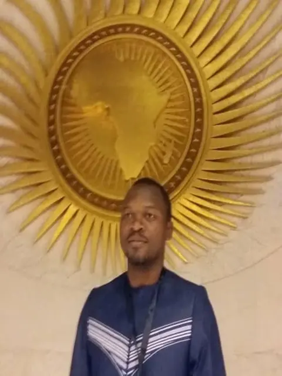
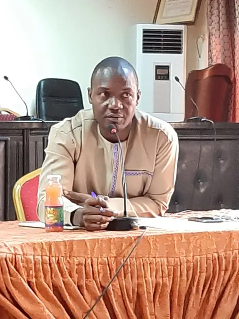
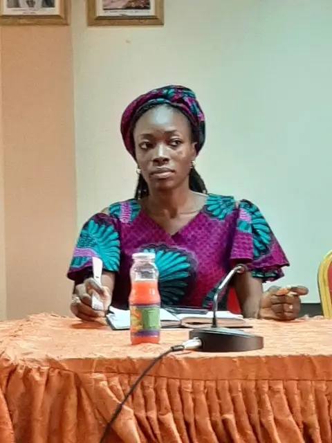

Ressources humaines
Le personnel du CNDT
Une équipe organisée par niveaux hiérarchiques, du Secrétariat Permanent aux Secrétariats techniques.
Annuaire interne
Effectif par niveau hiérarchique
Chaque ligne sépare un niveau hiérarchique. Cliquez sur une personne pour voir sa fiche.
Direction
1 personne
Secrétariat Permanent
1 personneCoordinations exécutives adjointes
4 personnes
Dr TSUANYO David
Coordonnateur Exécutif Adjoint chargé de la Recherche
Doctorat en Ingénierie de l'Énergie

M. KOUNA Jean Baptiste
Coordonnateur Exécutif Adjoint — Commission Administrative, Financière et Comptable
Master Professionnel en Propriété Intellectuelle
Mme BILOUNGA BINDOUA Marie Sandrine
Coordonnatrice Exécutive Adjointe chargée de la Coopération
Master en Économie · DESS Banque-Finance · Master GRH

Mme ISAOURA Bénite
Coordonnatrice Exécutive Adjointe — Documentation, Communication et Relations Publiques
Master Professionnel en Informatique
Chefs de Secrétariat titulaires
5 personnes
Dr ABOUBAKAR EL BOUKAR
Chef du Secrétariat des Politiques Scientifiques et Technologiques
Doctorat en Droit Public
M. AMADA BRAHIM
Chef du Secrétariat des Ressources Humaines, de l'Action Sociale et du Multiculturalisme
Doctorant en Biologie

Dr MENGA Francis Daniel
Chef de Secrétariat Technologies de l'Energie des Mines et de l'Environnement
Doctorat en Énergétique et Environnement
Dr PAGLAN Paul André
Chef du Secrétariat Technologies et Transformations Industrielles
Doctorat en Physique Non Linéaire et Systèmes Complexes

Mme TEMGOUA NANFACK Pélagie Flore épse ABOMO
Chef du Secrétariat TIC et Intelligence Artificielle
Master de Recherche en Informatique
Autres Chefs de Secrétariat
3 personnes
Mme EYOUM EKOULE Henriette Annie Dorette
Assistante du Secrétaire Permanent
Baccalauréat D
M. BABGAI Raphaël GUIDÉKÉ
Chef de Secrétariat Adjoint — Responsable du Parc Informatique
Master en Informatique et Télécommunications
M. AVAH Jean Jaurès Fils
Chef de la cellule informatique
DEA en Biologie Animale, option Zoologie
Aucun résultat
Aucune personne ne correspond à votre recherche. Essayez un autre nom, une fonction ou un Secrétariat.
Instituts sous tutelle du MINRESI